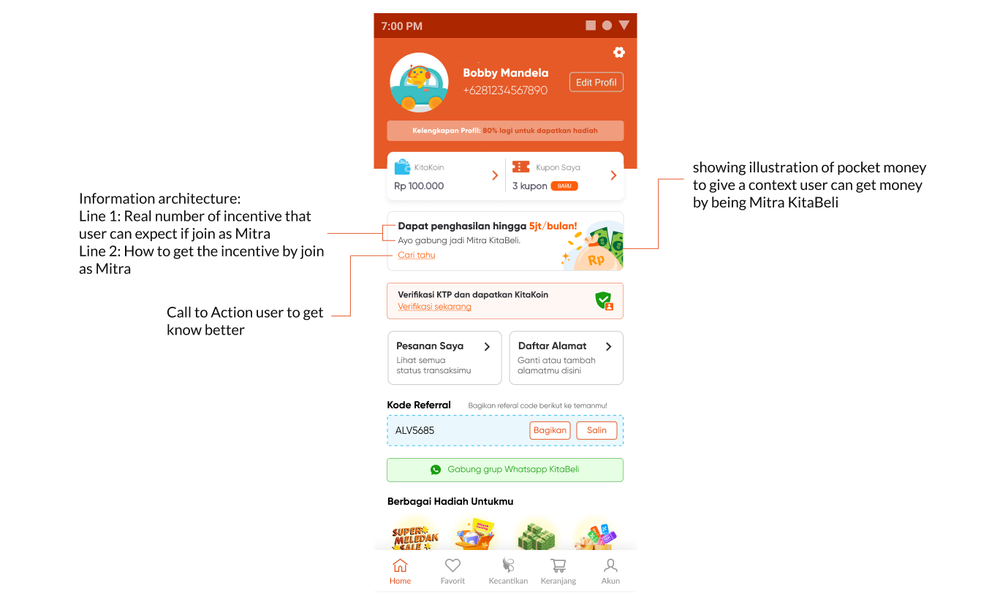
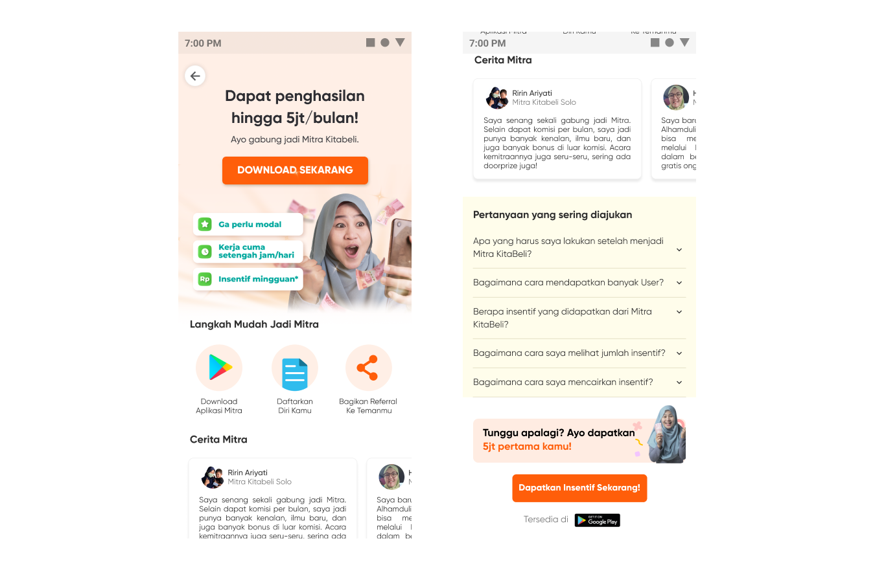
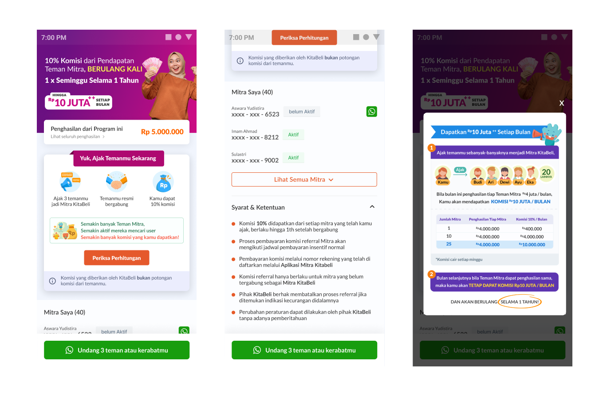
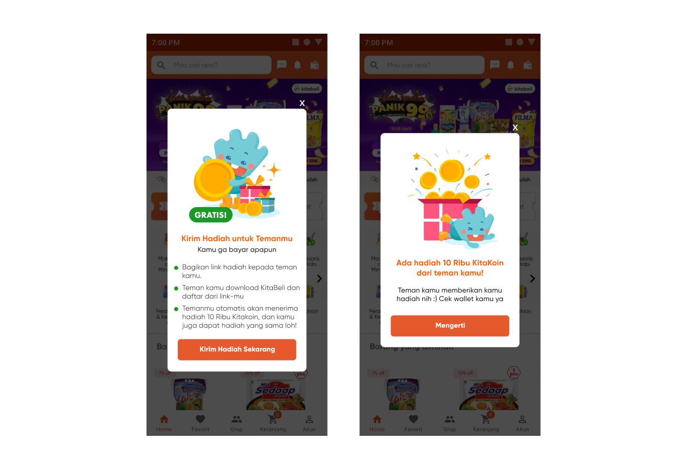

Project Overview
KitaBeli is a social commerce platform where users can earn incentives when they register as Mitra and refer other users. Therefore, it is important for KitaBeli to acquire new users without making it feel like they are referring others in order to receive incentives. The acquisition team at KitaBeli wants to increase the number of new users joining as Mitra, but according to the data we have from the user app, many of them are not registering as new Mitra and many of the existing Mitra do not understand how to participate in the referral reward program.
The Problem Definition
User that want to acquire to be Mitra:
Reason of Mitra didn’t do the referral reward program:
• Just joined Mitra Kitabeli and only get 80k incentive (new mitra).
• Depends on Kitabeli ongoing program. If the program was attractive, Mitra will set the target.
• The Price on Kitabeli app is expensive.
• Mitra didn’t feel confident. She said she already happy after get 1 user.
• Rarely open their mobile phone so Mitra got left behind with ongoing program (period time of the program will be over soon when Mitra open Kitabeli app).
Mitra that set the target to referral:
• 2 Mitra per week (BS,38 y.o, Solo, New Mitra, visit Referral Page).
• 5 Mitra per week (MB, 39 y.o., Bekasi, New Mitra, didn’t visit Referral Page).
• 10-20 Mitra per month (HS, 47 y.o., Bekasi, New Mitra).
• 700k per week (SS, 37 y.o., Malang, Old Mitra, visit Referral Page, but didn’t share content).
Design Opportunities:
How Might We:
• Is this mitra referral reward program page is understandable for mitra using this?
• Is the navigation for share the referral easy to use?
• Is this feature really not fun for mitra share the benefit?
• Is the navigation of the mitra referral reward program is clearly to see?
Design Solution:
1. Make the entry point more clearer

As the visualization more clearer so user can get know better the entry point and get what they expected if joining as Mitra KitaBeli.
2. Create the landing page more rich information

Showing the image of housewives getting money from their phones can give a context to get incentive by part-time job as a Mitra KitaBeli. And there’s a steps for user if they want to be a Mitra, also getting rich information by showing success story of Mitra and FAQ, the call to action showing persuasive text so user can acquired as Mitra.
3. Enhance clarity of Mitra referral page

The first line showing the benefit that can get by Mitra and how to referral to others, showing calculation the program, also the referred user by Mitra and call to action stick on the bottom to invite 3 or more friends.
4. Create the referral gamification Mitra to user

Sometime the obstacles mitra/user want to referral new user is because they demotivated and feel so hard as a term it’s a ‘part-time’ that need to done their job. But, as a team we need to make sure to make it fun and easy, so we create small gamification.
Result
Positive impact long run increasing the number 43% of acquisition. Also the intentional Mitras getting more better as knowing the referral reward program.
Learning things
• Most of the Mitras isn’t tech savvy, need to make sure we are on the same page with them.
• Their laziness to referring other people is our job to make sure are we creating this product well enough? easy enough?